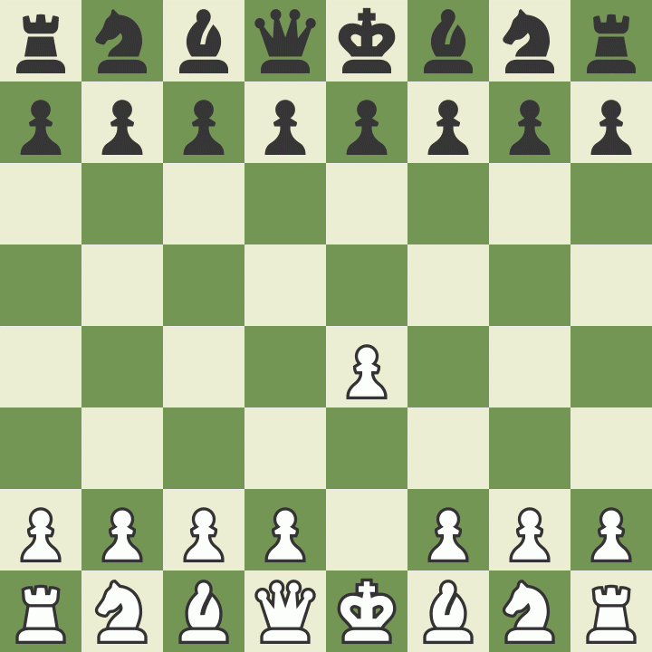
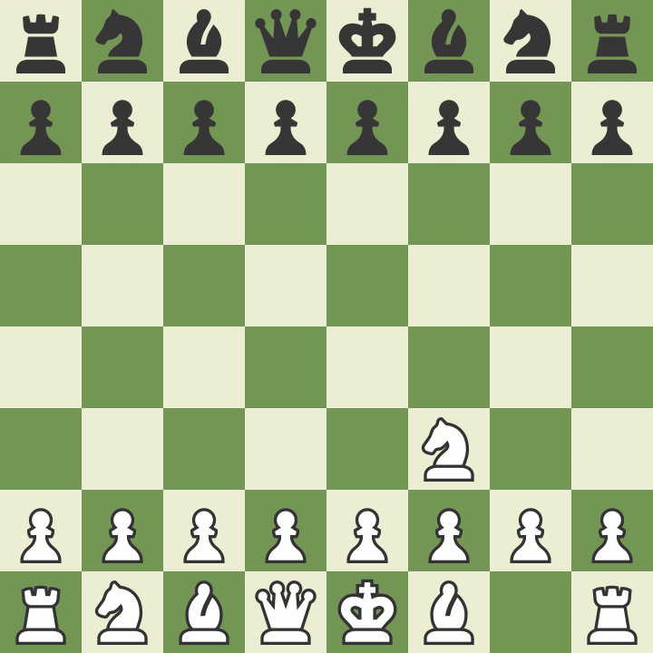
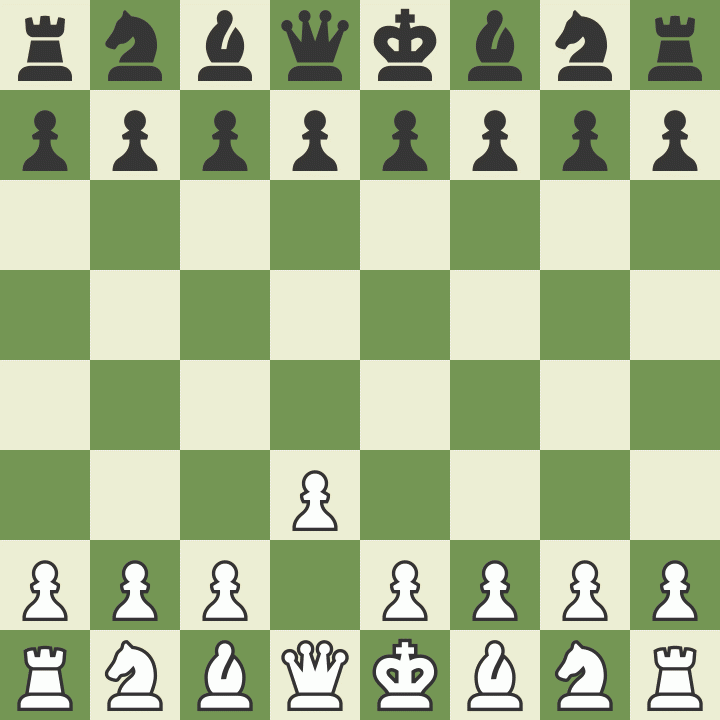
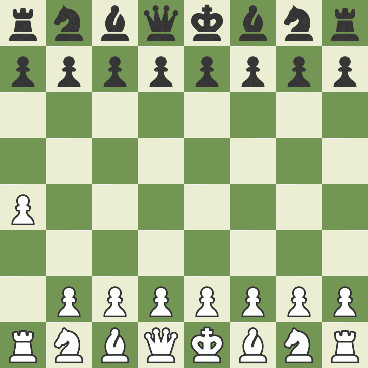
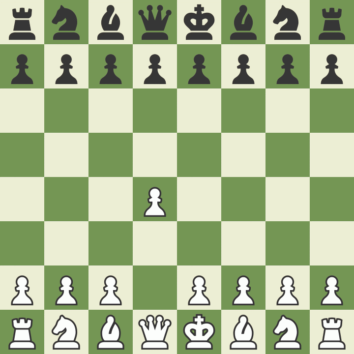
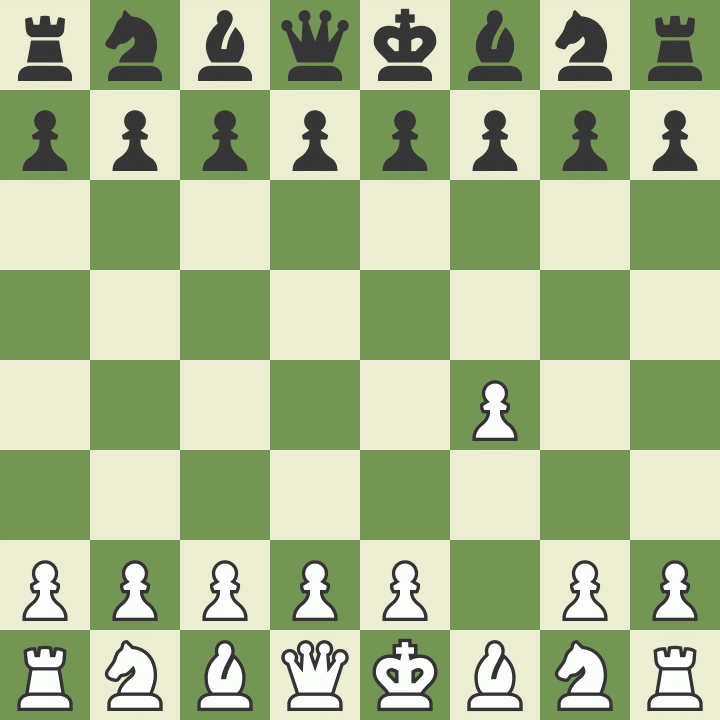
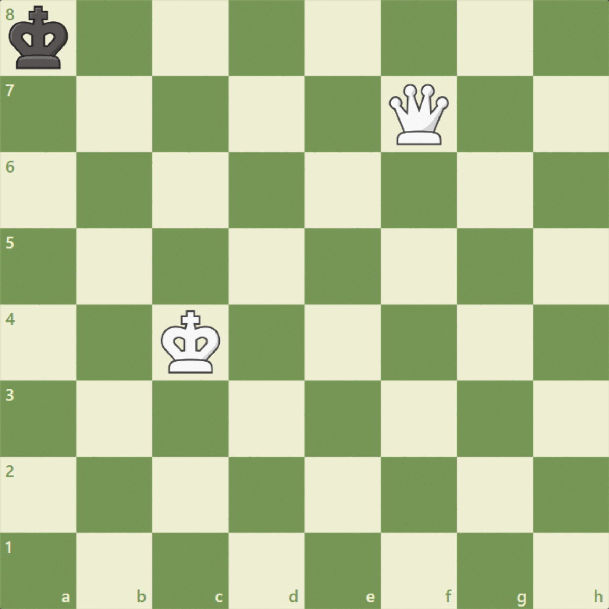
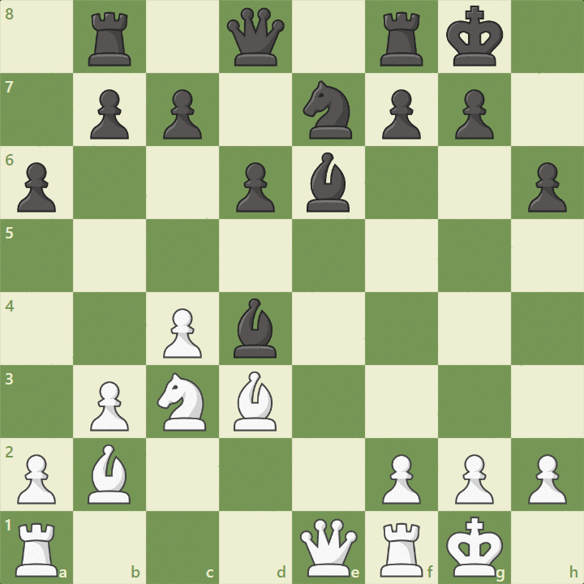
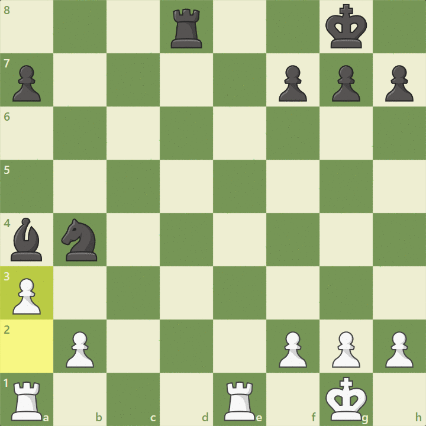

O peão anda só pra frente, uma casa por vez — mas, na sua primeira jogada, pode avançar duas casas. Para capturar, ele só ataca nas casas diagonais na frente dele, uma casa para a esquerda ou direita.

Uma característica importante sobre o peão é que quando ele chega na última casa do tabuleiro adversário ele pode ser promovido, sendo substituído por cavalo, bispo, torre ou rainha.
Cavalo
O cavalo anda em “L”: duas casas numa direção e uma para o lado. Além disso, é o único que pode pular sobre outras peças! Captura quando cai na casa do inimigo.

Bispo
O bispo se move quantas casas quiser pelas diagonais, e captura do mesmo jeito: parando na casa da peça inimiga. Existe o bispo que só anda pela casa branca e outro só pela casa preta.

Torre
A torre se move quantas casas quiser só na horizontal (filas) ou vertical (colunas). Para capturar, é só parar na casa do adversário.

Dama
A dama pode andar quantas casas quiser em linha reta: para frente, trás, lados e diagonais — mas nunca em “L”. Ela captura a peça inimiga parando na casa dela.

Rei
A peça mais importante do jogo! O rei anda uma casa por vez em qualquer direção — para frente, trás, lado ou diagonal. Ele captura a peça adversária se ela estiver numa casa ao redor dele.
Conceitos
Xeque
Quando o rei está ameaçado por qualquer peça adversária, dizemos que ele está em "xeque".
Xeque-mate
O xeque-mate é o ponto final de uma partida. Se o rei está em xeque e não existem casas para o rei ocupar que não estejam ameaçadas, então o rei está em "xeque-mate".

En Passant
Quando um peão em sua casa de origem anda duas casas e fica ao lado de um peão adversário, este pode capturá-lo como se houvesse simplesmente andado uma casa.
Roque
O roque é realizado com uma das torres e o rei. Para a realização do roque é importante observar que só é possível executá-lo quando:
O rei e a torre do lado escolhido para o roque não foram movimentados.
Não houver peças entre o rei e a torre.
O rei não estiver em xeque.
As casas em que o rei passar não estiverem ameaçadas.
O rei, ao rocar, não terminar em xeque.
O roque é feito da seguinte maneira:
O rei anda duas casas em direção à torre.
A torre pula o rei e ocupa a casa ao lado do rei.
Rei afogado
Quando o rei não está em xeque e as casas que o cercam estão ameaçadas, a partida está empatada pois o rei está "afogado".

Ataque Duplo
Este é um dos temas que acontecem com muita frequência nas partidas de xadrez. "Ataque duplo" é a denominação dada a um ataque a duas peças adversárias por uma peça de menor valor.

A dama ataca o bispo e ameaça xeque-mate ao mesmo tempo.
Garfo
Um garfo é uma tática no xadrez em que uma única peça ataca duas ou mais peças ao mesmo tempo.

Valores comparativo das peças
Atribuiu-se às peças um valor numérico:
Peça
Valor
Dama
9 pontos
Torre
5 pontos
Bispo
3 pontos
Cavalo
3 pontos
Peão
1 ponto
Estes valores não são absolutos e se utilizam como referencial para as trocas.
Controle de tempo
Os controles de tempo referem-se a quanto tempo cada jogador recebe para completar uma partida. Eles podem ser simples ou complexos. Os controles de tempo clássicos geralmente se referem a controles de tempo mais longos e geralmente são usados para torneios presenciais.